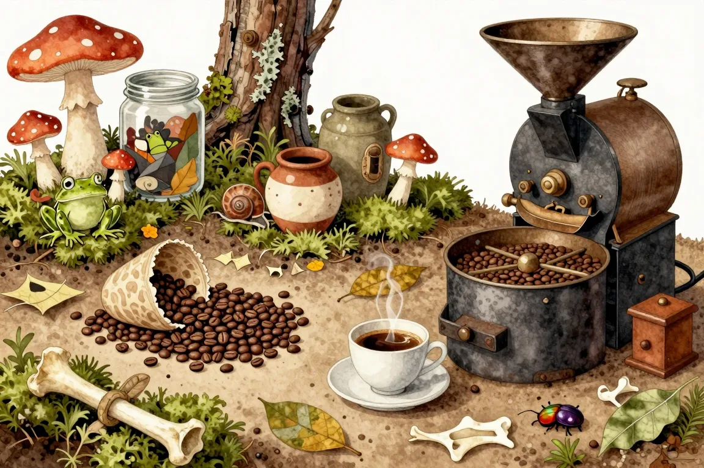

internet · 2020–now · also: Goblin core, Moss and mushroom look
A look for the small wild and the overlooked: moss, mushrooms, frogs, snail shells, bones, soil, old jars and crumpled earth-tone clothes. It spread on Tumblr and TikTok after 2019.

Core thesis
Find beauty in mud, rot and clutter: the untidy forest floor is a better home than a clean showroom.
Design principles
Set the ground in earth tones: moss green (#5C6B3A), bark brown (#4A3626) and clay (#A8744C).
Use toadstool red (#B5382C) and bone (#E6DCC3) as the two spot colours, each under 10% of the surface.
Pair a rough, old-style serif for headings with a plain text serif; allow uneven baselines of 2px to 4px.
Photograph close and low: mushrooms, moss, snails, jars of finds and hands in soil, with a soft overcast light and a 15% green cast.
Layer torn paper, leaf and bone shapes at 48px to 160px, rotated by -8° to +8°.
Draw borders as uneven 2px lines with a rough edge; keep corners at 6px to 12px and slightly different.
Fill the frame with small found things: buttons, shells, coins, keys and pressed leaves.